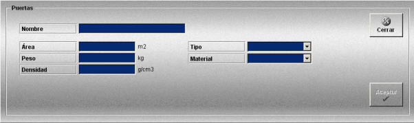

Puertas
La creación y edición de puertas se realiza mediante la siguiente ventana.

Esta ventana permite definir las puertas que podrán ser añadidas a los artes de arrastre definidos.
Se definen los siguientes datos:
Nombre: Nombre de la puerta.
Formato: caracteres alfanuméricos.
Área: Superficie de la puerta.
Unidades: metros cuadrados
Rango: 0.00- 10.00
Peso: Peso de la puerta.
Unidades: kilogramos
Rango: 0.00- 1000000.00
Densidad: Densidad del material de la puerta.
Unidades: gramos/cm3
Rango: 0.10- 10.00
Tipo: Permite especificar distintos tipos de puertas. Puede tomar los siguientes valores.
Material: Permite especificar distintos tipos de material. Puede tomar los siguientes valores.